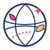

Visión
Un mundo donde cada joven pueda aprender de otras culturas y encontrar oportunidades sin que las fronteras limiten sus sueños.

Intercambio CulturalUn espacio para que jóvenes de distintos países compartan sus culturas, creen amistades y descubran oportunidades que pueden cambiar su futuro.

“Cuando conocemos la historia de otra persona, el mundo deja de sentirse tan lejano.”La idea detrás de Intercambio Cultural Mundial
Intercambio Cultural Mundial (ICM) es una iniciativa educativa y comunitaria creada por Yohana Mariel Suriel González. Reúne a jóvenes para aprender unos de otros, celebrar sus raíces y explorar caminos de estudio, crecimiento y colaboración internacional.
Un mundo donde cada joven pueda aprender de otras culturas y encontrar oportunidades sin que las fronteras limiten sus sueños.
Crear encuentros respetuosos, accesibles y participativos entre jóvenes de diferentes lugares.
Fortalecer el entendimiento intercultural y acercar a la juventud a oportunidades globales concretas.
Jóvenes curiosos, con ganas de compartir su cultura, aprender y construir comunidad. No necesitas experiencia previa.
El proyecto convierte el intercambio cultural en aprendizaje práctico: cada participante aporta conocimientos y se lleva nuevas perspectivas, contactos y recursos.
Un ciclo participativo que da estructura a cada encuentro y garantiza que todas las voces tengan espacio.
Conocemos al grupo, acordamos normas de convivencia y definimos intereses y expectativas.
Una persona o equipo presenta su país mediante relatos, música, comida, idioma, juegos o tradiciones.
Conversamos, hacemos preguntas y comparamos experiencias sin juzgar ni asumir que una cultura es igual a otra.
Exploramos recursos, becas, programas y rutas de acceso; cada dato se comparte con su fuente para poder verificarlo.
Cerramos con aprendizajes, una meta personal y una pequeña acción para mantener viva la conexión.
 Una conversación puede abrir una puerta en cualquier parte del mundo.
Una conversación puede abrir una puerta en cualquier parte del mundo.
El grupo avanza en ciclos temáticos para que cada joven tenga su turno de compartir y el tiempo para conocer a los demás.
Se comparte el tema y cada participante prepara una historia, objeto, imagen o recurso. No hace falta una presentación formal.
Una persona anfitriona guía el encuentro: bienvenida y acuerdos, presentación cultural, preguntas en grupo y exploración de oportunidades.
El equipo envía un resumen con ideas clave, enlaces verificados y la próxima fecha. El grupo deja una reflexión y propone el siguiente tema.
Se cuida el turno de palabra, se puede pasar si algo incomoda y no se graban ni comparten imágenes sin consentimiento.
Cada actividad invita a participar desde lo que somos y a salir con algo nuevo que poner en práctica.

Una receta, un recuerdo, una celebración o el significado que hay detrás de un plato.

Intercambiamos canciones y las historias que cuentan sobre el lugar y las personas que las escuchan.

Compartimos becas, carreras, voluntariados y consejos para dar el próximo paso.

Aprendemos saludos y frases cotidianas, y descubrimos los matices que no caben en un diccionario.

Un recorrido personal por la vida diaria, más allá de las postales turísticas.

Equipos internacionales crean una idea pequeña para aportar algo positivo a su comunidad.
Cada encuentro nos acerca a formas nuevas de vivir, celebrar y soñar.


Las diferencias nos enseñan; el respeto crea el espacio para aprender.
Escuchamos con curiosidad y tratamos cada historia con dignidad, sin burlas ni prejuicios.
Hacemos lugar a distintas voces, idiomas, realidades y formas de participar.
Todas las personas pueden enseñar algo y aprender algo. El conocimiento circula entre todos.
Compartimos información con cuidado, citamos las fuentes y protegemos la privacidad del grupo.
Déjanos conocerte. Completa el formulario y cuéntanos qué te gustaría compartir y qué te gustaría descubrir.
 Tu próxima historia puede empezar aquí.
Tu próxima historia puede empezar aquí.La participación es voluntaria. Si eres menor de edad, necesitarás el acompañamiento o consentimiento de tu madre, padre o tutor legal.
¿Te queda algo por saber? Aquí respondemos lo esencial.
No. Puedes participar desde tu país. El intercambio sucede compartiendo experiencias y perspectivas desde donde vive cada persona.
No es requisito. El idioma de trabajo se acordará para cada grupo. La idea es que puedas participar con comodidad y que aprendamos juntos.
Este formulario recoge interés y no cobra ninguna tarifa. Si en el futuro alguna actividad tuviera costos, deben explicarse con claridad antes de confirmar la participación.
No automáticamente. El equipo organizador se pondrá en contacto para compartir detalles, disponibilidad y próximos pasos.
Recursos de estudio, becas, intercambios, voluntariados, cursos y otras iniciativas. Se procura incluir la fuente oficial y recordar que cada participante debe verificar requisitos y fechas.
El programa está pensado para jóvenes. Si eres menor, necesitarás el consentimiento y acompañamiento de tu tutor legal para participar y comunicarte con la organización.